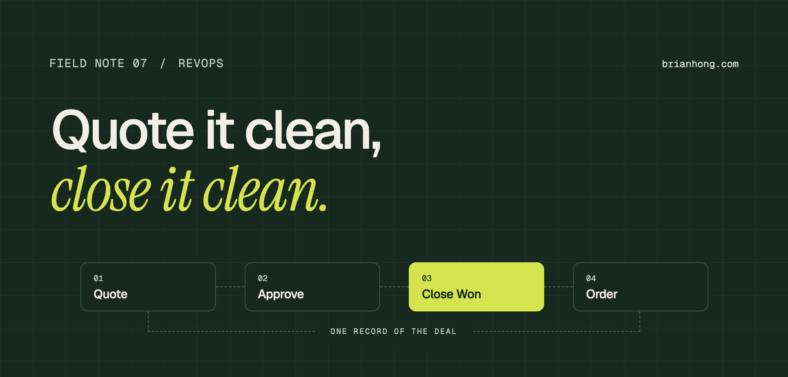

Auditing quote-to-cash in Salesforce: Closed Won data you can trust
If finance rebuilds the bookings number in a spreadsheet every month, your quote-to-cash process has a leak. Here’s how to find it and close it.

Sales says the quarter closed at one number. Finance says another. The difference is a handful of deals marked Closed Won without a signed order form, a discount that never went through approval, and a product line someone typed into a text field. Every month, someone spends two days reconciling it by hand.
Quote-to-cash in Salesforce covers everything from the first quote to the order that finance bills: products and pricing, discounts and approvals, the Closed Won moment, and the handoff to billing. When it works, the opportunity is the record of the deal. When it doesn’t, it’s a rough draft.
I’ve worked on CPQ bundles, product rules, and approval workflows, and on validation that ties every Closed Won deal to its PO and order form. That work got us to 100% Closed Won audit alignment, and after one CPQ rebuild, about 90% less manual quoting. This is how I’d audit a quote-to-cash process today.
What quote-to-cash covers in Salesforce
- Configure and price Products, price books, bundles, and the rules that stop reps from quoting combinations you can’t deliver.
- Discount and approve Who can discount how much, and what happens when a quote goes past that. Approvals should be automatic, logged, and fast.
- Close The Closed Won moment. The opportunity amount, products, and dates should match the signed paperwork exactly.
- Order and hand off An order or contract record that billing, provisioning, or onboarding can act on without asking sales what was sold.
Signs your quote-to-cash data can’t be trusted
- Shadow spreadsheets Finance or deal desk keeps its own bookings tracker because Salesforce doesn’t match the contracts.
- Closed Won, no paperwork Deals get marked won on a verbal yes to hit the quarter, and the PO shows up weeks later or never.
- Amount ≠ products Opportunity Amount is typed by hand and doesn’t match the sum of the line items or the primary quote.
- Approvals in Slack DMs Discounts get approved in a chat thread, so there’s no record of who approved what, or why.
- Reopened deals Closed Won opportunities get edited after the fact to fix amounts and dates, and the forecast history no longer reflects reality.
Trace one deal end to end
Before you look at any rule or flow, pick five recently closed deals and walk each one from first quote to invoice. Pull the opportunity, the quotes, the approvals, the signed order form, and what finance billed. Write down every place a human retyped, changed, or chased something.
This takes an afternoon and finds more than a week of reviewing configuration. The gaps are almost always at handoffs: quote to approval, signature to Closed Won, and Closed Won to order.
“The opportunity should be the record of the deal, not a rough draft that finance fixes later.”
CPQ: product rules, bundles, and approvals
If you run Salesforce CPQ or Revenue Cloud, most quote errors can be prevented at the quote instead of caught at close.
- Bundles Package products that are always sold together, with required and optional options, so reps stop building them line by line.
- Product rules Validation and selection rules that block invalid combinations and add required items automatically.
- Discount schedules Volume and term discounts calculated by the system, so reps don’t type a percentage and hope.
- Approval rules Tiered approvals by discount level, term length, or non-standard terms, routed automatically and recorded on the quote.
- Primary quote sync The primary quote drives opportunity products and amount. Nobody edits Amount by hand.
Don’t try to encode every pricing exception on day one. Start with the rules that cause the most rework, and leave room for a documented exception path.
Gate Closed Won on the paperwork
The single most effective control is a validation rule that stops an opportunity moving to Closed Won without the evidence finance needs: a PO number or signed order form, a primary quote, and a close date that isn’t in the future.
Write an error message that says what to do, not just what’s missing: “Attach the signed order form and enter the PO number before closing. Deal desk can help.” Pair it with a rule that locks key fields after Closed Won, so changes go through deal desk instead of quiet edits.
Stewardship for opportunity and quote data
Rules catch the obvious errors. The rest needs people: a named owner for Amount, Close Date, Stage, and product data, and a weekly look at what slipped through. It’s the same model as data stewardship on any object. Opportunity and CPQ data just carry more money.
Einstein Activity Capture or your engagement tool’s sync helps here too. When emails and meetings land on the opportunity, it’s much easier to see why a deal closed the way it did.
A quote-to-cash audit scorecard
Score each area green, yellow, or red after the end-to-end trace. It turns a vague ‘our data is bad’ into a prioritized list leadership can fund.
| Area | Question | Evidence |
|---|---|---|
| Pricing | Can a rep quote an invalid combination? | Product rules, test quotes |
| Discounts | Is every discount above threshold approved? | Approval history |
| Amount | Does Amount match the primary quote? | Report of mismatches |
| Closed Won | Does every won deal have PO + order form? | Validation rule, report |
| Post-close edits | Are won deals edited after close? | Field history |
| Handoff | Can billing act without asking sales? | Order records, interviews |
A 30-60-90 day quote-to-cash plan
- Days 1–30 Trace five deals end to end, fill in the scorecard, and agree with finance on what Closed Won requires. Report on current mismatches as a baseline.
- Days 31–60 Add the Closed Won validation and field locks. Move discount approvals into the system. Fix the top two CPQ rules causing rework.
- Days 61–90 Launch a weekly deal desk review of exceptions. Show finance and sales leadership the mismatch trend, and retire the shadow spreadsheet once the numbers agree.
If the audit finds years of layered automation around opportunities, a tech debt audit is a good next step before adding more rules.
Frequently asked questions
What is quote-to-cash in Salesforce?
Quote-to-cash in Salesforce is the process from building a quote through approval, Closed Won, and the order that billing acts on. It usually involves products and price books, CPQ or Revenue Cloud, approval workflows, and a handoff to finance or billing systems.
How do I make sure Closed Won deals are accurate?
Add a validation rule that blocks Closed Won without a signed order form, PO number, and primary quote. Sync Amount from the primary quote instead of typing it, lock key fields after close, and review exceptions weekly with deal desk or finance.
What should a quote-to-cash audit include?
Trace a few recent deals from quote to invoice, then score pricing rules, discount approvals, Amount accuracy, Closed Won evidence, post-close edits, and the handoff to billing. Fix the areas that cause the most manual rework first.
Do I need Salesforce CPQ for quote-to-cash?
No. Simple product catalogs can run on standard products, price books, and quotes. CPQ or Revenue Cloud pays off when you have bundles, complex discounting, subscriptions, or approval tiers that reps currently handle by hand.